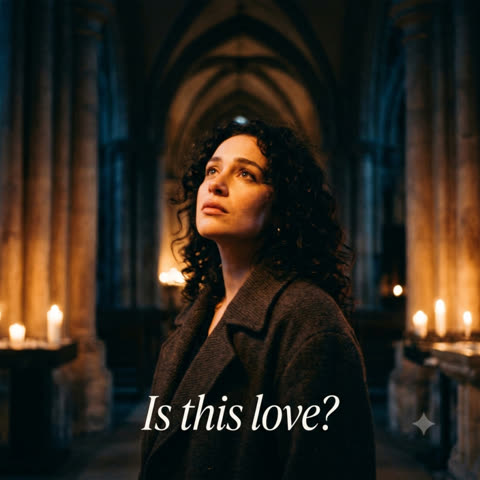

Vizcaya Sound · 2026-08-07
Is this love?
Lyrics
Two in the morning, the keys play soft and low
Your face in the shadows everywhere I go
Sun comes up, but the ceiling stays the same
I'm whispering your name to a room that doesn't change
Daylight or moonlight, you're running through my head
Living in the space on my side of the bed
I can't shake the fever, can't wash off the spell
Am I falling in deep, or just tripping on myself?
My head tells me "slow down," my heart plays it loud
I'm lost in the rhythm, I'm lost in the crowd
Got a question burning right through the dark…
Is this love, or am I just infatuated?
Is this a heart aligned, or a mind intoxicated?
Is it deep desire, or just simply lust?
Is it something I can build, or a habit I can't trust?
Oh, day and night, you're haunting every thought
Tell me, is this the real thing, or am I just caught?
You touched my shoulder, and my whole world shook
Now I'm re-reading every single page of the book
When we're close, it's an electric rush
Every touch feels heavy, every word feels like too much
Is it your soul I'm craving, or the heat of your skin?
Where does the fantasy end, and the real truth begin?
Cuz every time I close my eyes, your face is all I see
Like a classic melody that won't set me free.
Yeah, my head says "careful," but my chest hits the floor
I'm standing at the threshold, knocking on your door
Got a question burning right through the dark…
Is this love, or am I just infatuated?
Is this a heart aligned, or a mind intoxicated?
Is it deep desire, or just simply lust?
Is it something I can build, or a habit I can't trust?
Oh, day and night, you're haunting every thought
Tell me, is this the real thing, or am I just caught?
(Oh, tell me now!)
Is it just a midnight obsession?
A temporary, beautiful lesson?
Or did I find the one that I've been waiting for?
Cuz if it's just the heat, why does it hurt so much?
Why does my spirit ache just to feel your touch?
Yeah, I need to know, before I lose control!
Is this love, or am I just infatuated? (Tell me, baby!)
Is this a heart aligned, or a mind intoxicated?
Is it deep desire, or just simply lust?
Is it something I can build, or a habit I can't trust?
Oh, day and night, you're haunting every thought
Tell me, is this the real thing, or am I just caught?
Day and night…
Always in my head…
Is it love… or just desire?
Is it you… or just the fire?